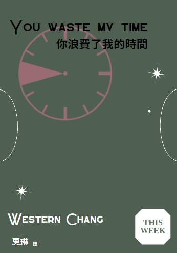

你浪費了我的時間
作者：Western Chang
譯者：惠琳
出版社：東方出版社
出版時間：2089/17/11
語言：繁體中文
定價：399元
簡介
● 最驚心動魄、扣人心弦的青春愛情小說
「那女孩對我說，若餘生是我，晚點也沒關係。她說人間孤獨，卻與我一見如故……但我想我們要好好再見，才能不負這一場遇見。」
● 成長的必然與年少綺夢眷念的虐戀拉扯
太過重視愛情與自我的Lily與Jason在分手多年後再次相遇。Lily還是當年的Lily，Jason卻早已不復往日的稚嫩——Jason已經不是當年那個能無條件包容Lily任性胡鬧、自我中心的男孩了。面對Lily提出的復合要求，Jason在第一時間便不能接受，但他要如何跟殷殷期盼的Lily開口？
● 思想的衝突與釋然
在被Jason拒絕之後，Lily憤怒地指責Jason當年有多麼的不貼心，無法成全她愛情至上的幻想，也不能滿足她物質層面的索求。到了Lily說出了這番真心話，Jason終於釋然了——即使已虔誠奉上一池碧綠的湖水，Lily想要的仍然是那蔚藍的天。Lily想要的從來不是一起成長的王子，而是捍衛她愛情幻想、公主地位的侍衛。原來自己當年付出的那些時光都是空流，他終於鼓起勇氣對Lily說出那句：「你浪費了我的時間。」